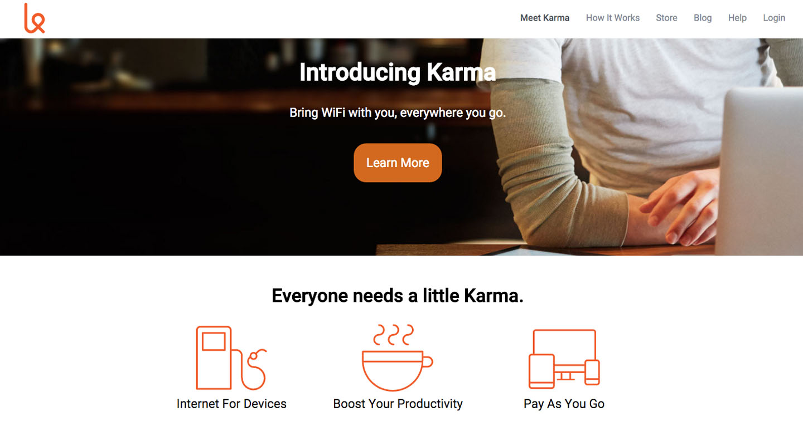
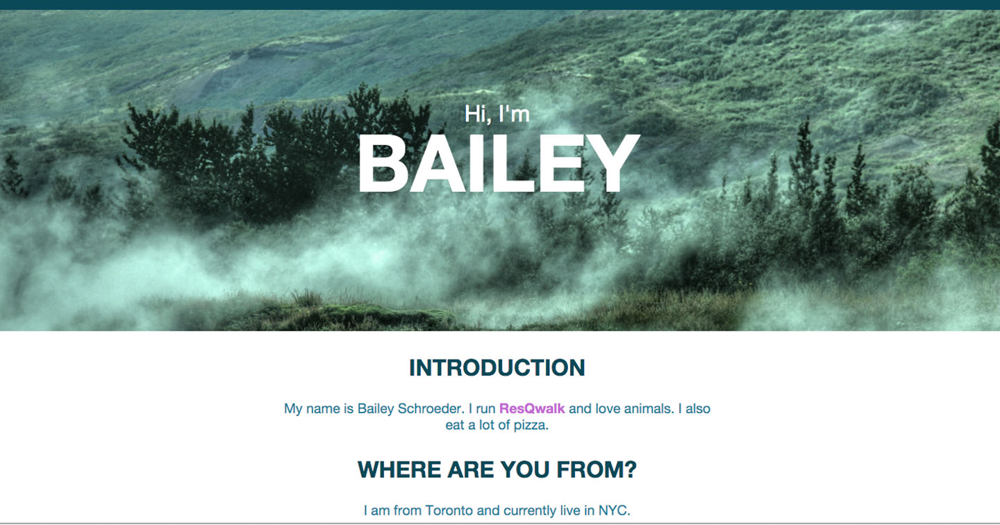
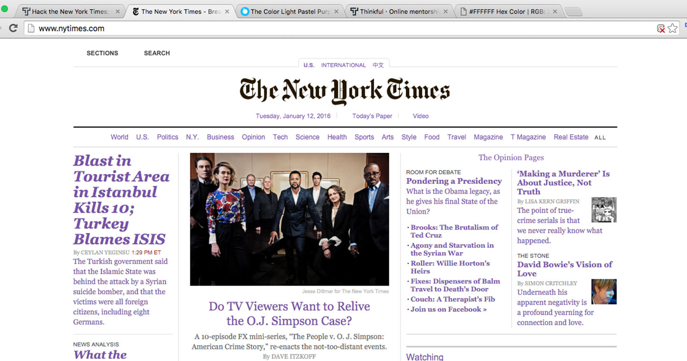

Founder of ResQwalk. Lover of animals. Web developer in training.
In this project I was responsible for cloning the Karma splashpage.
In this project I was responsible for making a simple 'About Me' page.
In this project I was responsible for using developer tools to transform NYTimes.com.
